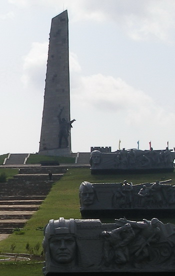

Мемориальный комплекс Саур-Могила
 В каждой стране есть свое памятное место, которое связано с подвигом солдат в Великой Отечественной войне. Для снежнянцев это легендарная Саур-Могила. В 12 км к югу от Снежного находится высота, за которую в августе 1943 года вели ожесточенные бои с немецко-фашистскими войсками части 5-й ударной армии Южного фронта. Начатое в 60-х годах строительство мемориального комплекса завершилось к 30-летию освобождения Донбасса, в 1973 году, в память о подвиге советских солдат, погибших при штурме высоты и прорыве немецкой оборонительной линии на реке Миус. Саур-Могила – это память о тех, кто летом 1943 года по этой открытой степи, под шквальным огнем шел на штурм высоты, занятой врагом. Высота 277,9 – так значилась Саур-Могила на оперативных картах и в боевых донесениях. После войны было подсчитано, что в среднем на каждые 5 квадратных метров у Миус-фронта приходилась одна воронка от разрыва снаряда. Пятая ударная армия в боях за Донбасс потеряла около 25 тысяч воинов. Те, кто вышел живым из тех боев за Саур-Могилу, не смогли забыть ее. Она стала ярким этапом их фронтовой биографии. На фашистском рейхстаге бойцами Самсиным, Павлухой, Стегнием начертано: «Сталинград – Саур-Могила – Варшава – Берлин». На десятки километров был виден 36-метровый обелиск из гранита, который был открыт 10 сентября 1967 года. Внутри обелиска находилась комната боевой славы. Перед монументом, в круге, увенчанном дубовыми листьями, в праздники зажигали Вечный огонь. Сюда, в незабываемые майские дни Победы и в День освобождения Донбасса, со всех городов страны съезжались ветераны Великой Отечественной войны. Это было традицией, и она живет по настоящие дни, несмотря на то, что снова, в конце лета 2014 года, Саур-Могила приняла на себя огонь украинской армии и обелиск был разрушен. Идея восстановления мемориала объединила весь созидательный потенциал ДНР. Она была и ныне остается святыней Донбасса.